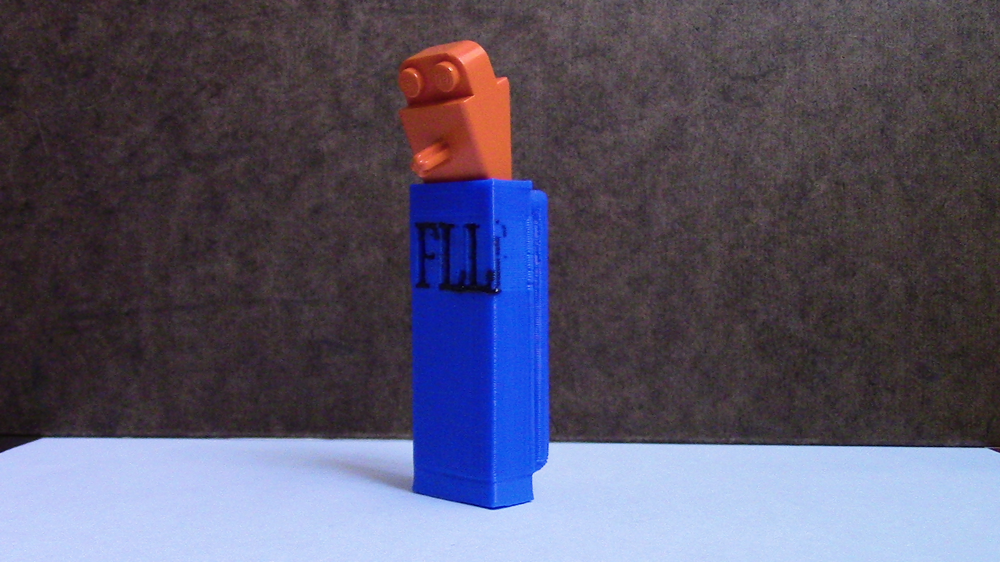
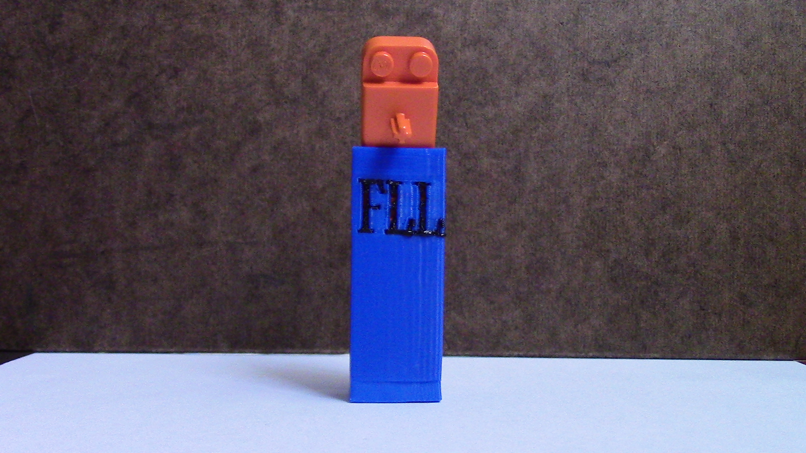
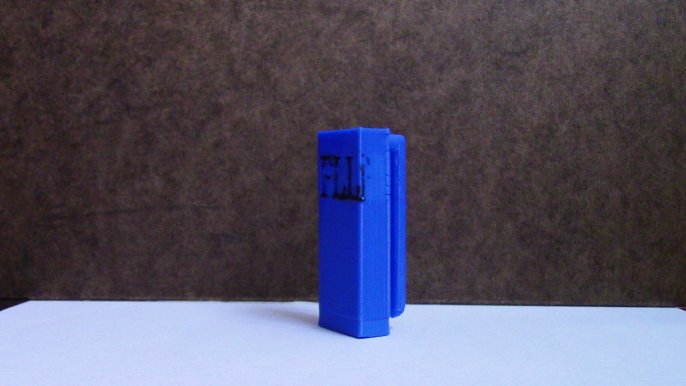
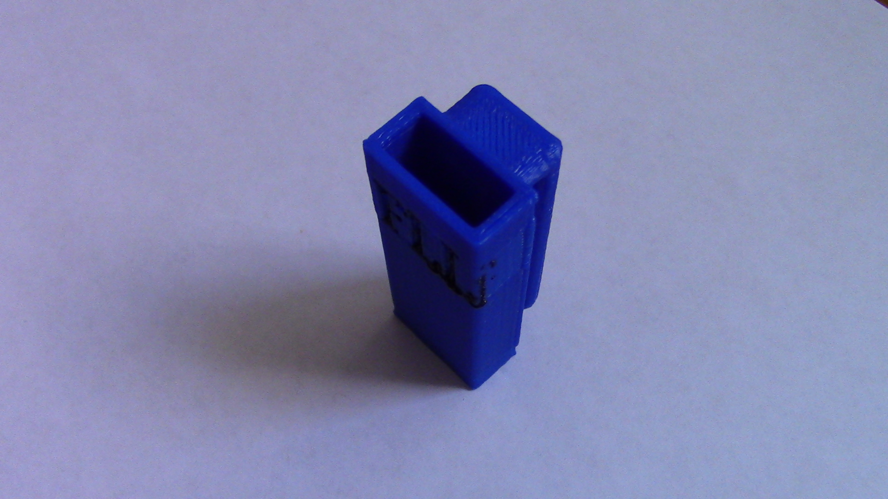

3D Printed Brick Separator Holster
With this 3D printed brick separator holster, you'll always be ready to separate LEGO bricks. Although originally designed for FIRST LEGO League teams, this fun print can be used anywhere. It can be downloaded for printing here.


